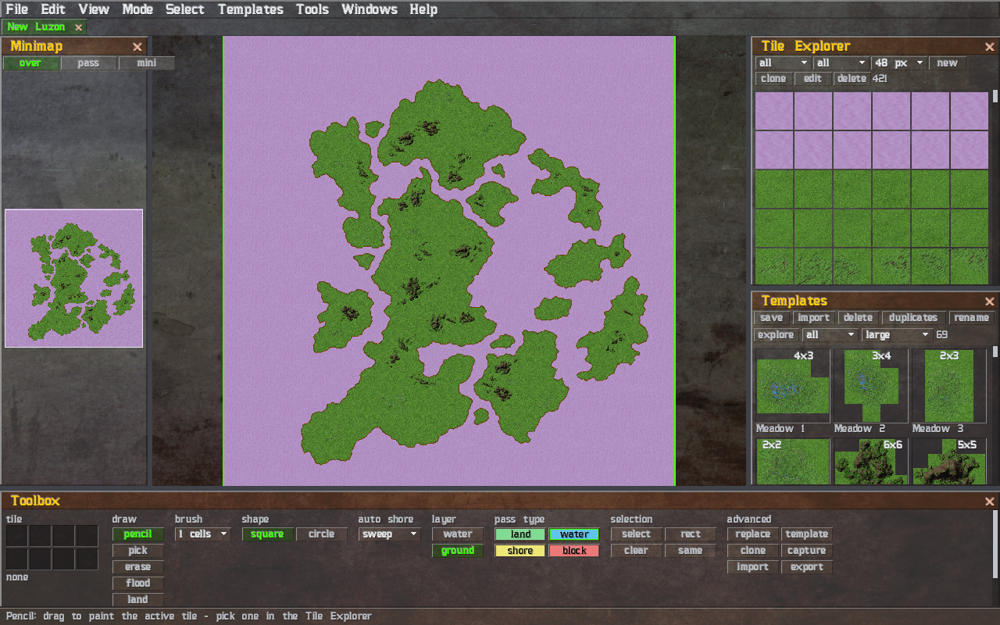
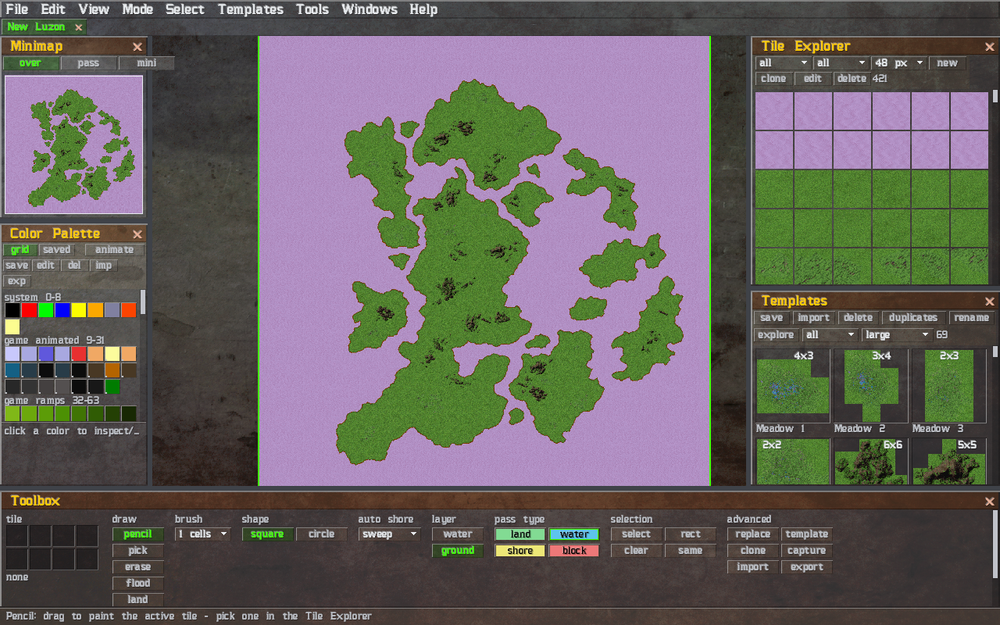
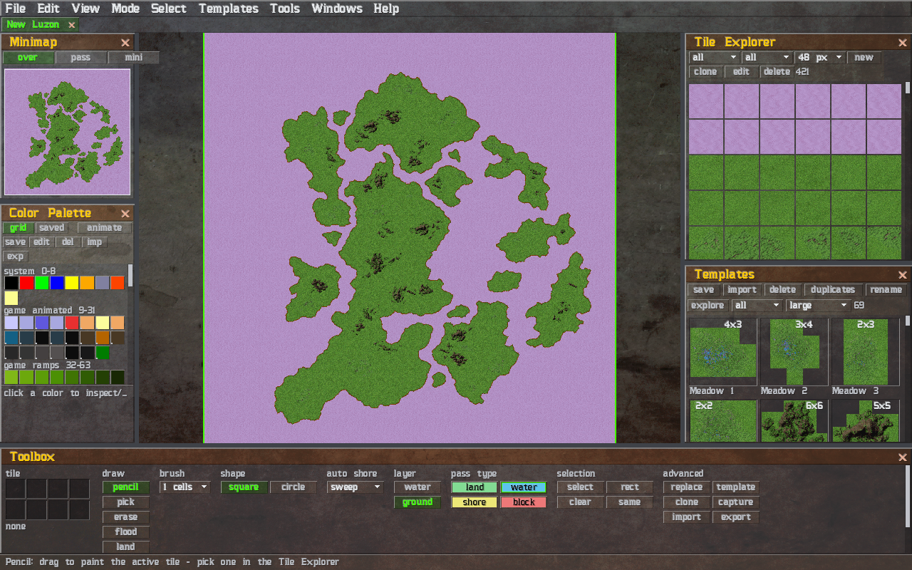
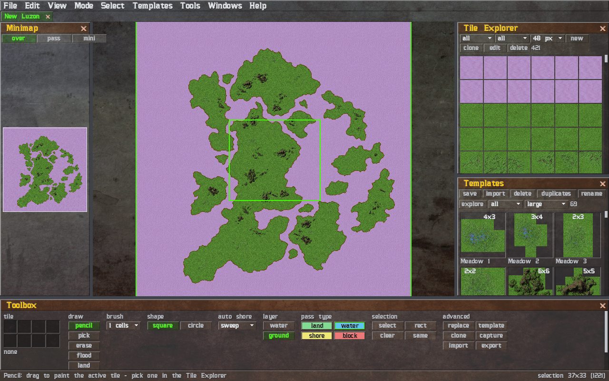
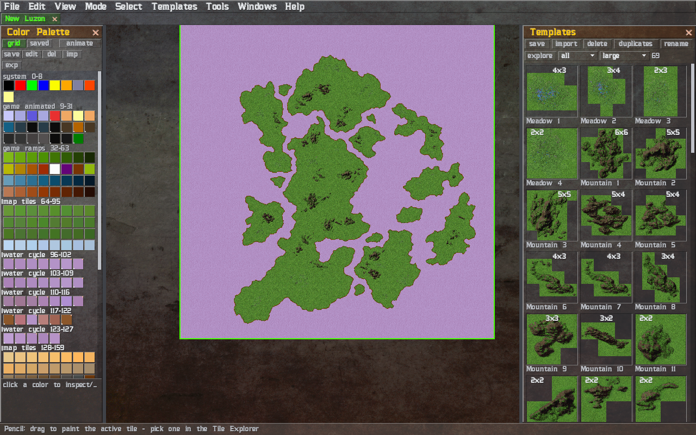
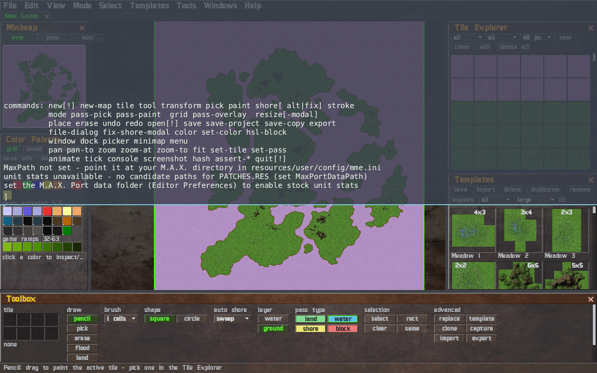

M.A.X. Map Editor - Manual
A map editor for M.A.X.: Mechanized Assault & Exploration (Interplay, 1996). This manual covers the portable release; everything also applies when running from source with cargo run.
1. Getting started

- Unzip the release anywhere you like. That folder is the whole install - the editor reads and writes its settings beside the binary, nothing touches your home directory.
- Run
max-map-editor(Linux) ormax-map-editor.exe(Windows). - Optional but recommended: tell the editor where your M.A.X. game lives - create/open
resources/user/config/mme.ini(your override file - see §7) in a text editor and set:
``ini [Paths] MaxPath=/path/to/your/MAX ``
With MaxPath set, Load dialogs start in your game directory, and the Units panel can load the game's unit sprites (see below). Future versions will use it for more (opening the MAX folder from the menu, installing finished maps straight into the game).
Linux desktop integration (optional). The zip includes install.sh. It copies the app to ~/.local/share/max-map-editor (or a directory you pass), asks for your MAX path, and adds a menu entry + icons. The editor never requires installation - the unzipped folder works as-is.
The editor opens a green starter map when launched without arguments. To open a specific document, pass it on the command line or use File → Open.
2. Documents: projects and WRL

The editor works on map projects (.json) - layered, tileset-aware documents. The original game format (.WRL) is import/export:
- Opening a
.WRL(File → Load Map) converts it into a project on the fly, keeping the WRL's own tiles as a synthetic, one-off pack. - File → Import WRL… instead rebuilds a standard-tile WRL on top of existing tilesets (see below) - the result is a fully editable project that reuses the shipped/user packs (auto-shore, variants, repaints all apply).
- Save (
Ctrl+S) writes the project; Export bakes a game-ready.WRLyou can drop into your M.A.X. install.
Import WRL (match onto tilesets)
File → Import WRL… takes a WRL that was built from standard game tiles and re-expresses every cell as a reference into the tilepacks you choose:
- Pick the
.WRL, then tick the tilesets to match against (WATER is always the base; the palette-owner radio works like New Map). - Each used WRL tile is matched against those packs by palette index, in all 8 orientations, so a rotated/mirrored tile reuses one pack tile with a transform. Animated coastal-water (palette indices 96-116) and a shore tile's transparency mask are wildcarded, so coastal tiles match whatever animation phase the WRL baked in. Matches are typically 95-100% for the originals.
- If some tiles match nothing, a list of them appears with three choices: Abort, Ignore missing (drop them - the water base shows through), or Import tiles with a destination toggle: This project (bundle the leftovers into a one-off pack saved beside the
.json) or User tileset (fold them into the user pack mirroring the chosen tileset, deduped by exact pixels + pass so re-imports don't pile up duplicates). With nothing missing the converted map opens immediately.
The result is a new untitled project (Save → Save As to keep it).
The 24 original maps, rebuilt as ready-to-edit starter projects, ship in resources/assets/maps/ - the Templates menu loads them directly.
Project files carry a format version ("mme_project_file_version": "2.0"). The editor opens any file of the same major version, migrating it to the version it writes; a different major version is refused. Older pre-versioning projects are migrated automatically the first time you save them.
3. The workspace

- Tabs - several documents can be open at once; the tab strip sits under the menu bar. Closing a document with unsaved changes asks first.
- Panels - Minimap, Tile Explorer, Color Palette, WRL Internal Palette, Toolbox, and Units live in docks around the map view. Drag a titlebar to float a panel, drag it near an edge to dock it there, drag the splitters to resize. The close glyph hides a panel; the Windows menu brings it back. Windows → Reset layout restores the default arrangement. A panel with more content than fits scrolls by mouse wheel, by dragging its scrollbar (click the track to page), and by PageUp/PageDown/Home/End while the cursor is over it.
- Status bar - a strip along the bottom shows a context hint for the active tool/mode, the cursor's cell coordinates, and the current selection's size. Toggle it with View → Status Bar.
- The layout is saved automatically on exit and restored on the next start.
Map navigation
| Action | Default control |
|---|---|
| Pan | drag with Middle or Right mouse button |
| Zoom | mouse wheel (towards the cursor) |
| Fit map to window | F |
| Paint | Left mouse button (a drag is one stroke = one undo step) |
4. Editing

- Tile painting - pick a tile in the Tile Explorer (or eyedrop one from the map with the picker tool), then paint. The Toolbox's brush dropdown sets the pencil/eraser footprint size and shape group its shape (square or circle). Fill floods a connected region - or, when a selection is active, fills exactly that selection. With Randomize on, painting places random variants of the chosen tile so large areas don't look stamped. Delete (
Del) clears the selected cells' ground. - Terrain Brush - free-hand paint a land/water mask, like a brush in a paint program, and let the editor build the terrain from it. The Toolbox's land and water buttons (or the
Q/Wkeys) choose what the brush lays down; drag on the map to paint it (the brush size and shape apply, same as the pencil). Land becomes flat ground and water becomes open sea - and when you release the stroke, the editor grows the coastline (beach + animated coastal water) along the new land/water boundary, all as one undo step. The Toolbox's auto shore select chooses that release behaviour: sweep (uniform), loop-walk (varied), or disabled to leave the painted land/water raw (then shore it later from Tools → Shore). It's the same land/coast the random generator makes, but shaped by hand. No tile needs to be selected. (Scriptable aspaint-mask X Yafter atool paint-land/tool paint-water, withauto-shore off|sweep|loop-walk; thenshorethe painted region.) - Tile Painter - paint a tile's pixels by hand. The Tile Explorer's header has new (a blank tile), clone (a copy of the selected tile), edit (the selected tile in place), and del (remove the selected tile) buttons. del removes a tile from its pack - user tiles in normal mode, any tile in
--dev; a tile still painted on the map is protected (erase it first). Pick a color from the 256-swatch palette grid or eyedropper one off the canvas; the swatch of the pixel under the cursor is ringed so you can see which slot it uses. The preview zooms (100 / 200 / 400 / 600 %) and, with animate colors on, cycles MAX's palette ranges live (water shimmer, etc.). replace recolors every pixel of a clicked color to the current color at once; copy / paste move a whole tile's pixels (raw indices) between tiles. export png / import png save the tile to / load it from a PNG image - on import each pixel maps to its visually closest palette color (any image size is sampled down to 64×64; transparent pixels become the family's mask color). A passability selector (land / water / shore / blocked) sets the tile's movement type, and the tile id field names the tile (a fresh suggestion for clones; editing it on an existing tile renames it). new and clone save to a user pack underresources/user/tilepacks/<PACK>/(named after the pack the tile derives from), available to any map that uses that pack. Shipped (stock) tiles are read-only - edit them only in developer mode (see--devbelow); otherwise clone and edit the copy. - Map Preferences (Edit → Map Preferences…) - optional metadata: name, suggested player range (2 / 2-3 / 2-4), description, date, version, author. Every editable field here and in the other dialogs is a full text editor: caret + arrow keys, Home/End, Shift-select, mouse drag-select, the system clipboard (
Ctrl+X/C/V), and a right-click menu with Cut/Copy/Paste/Select All. Fields are ASCII and accept only their valid characters (e.g. digits for sizes). The description is multiline: Enter inserts a newline (carriage returns are always stripped), and a scrollbar appears - draggable, wheel- and Home/End-scrollable - when the text overflows. - Layers - projects have a water base layer and a ground detail layer; painting acts on the active one (Mode → Tile Layer). Layers are a convenience for editing, not a hard rule - tiles simply stack bottom-up. An opened
.WRLis decomposed onto the two layers by passability (water cells on the base layer, land/shore/obstructions on the ground layer). Show Only Selected (same submenu) hides every layer but the active one so you can inspect or edit it in isolation; it's a view filter only and never changes the document. The app background behind the map is dimmed and the map is framed by a thin green outline, so the editor chrome reads clearly. - Shore (Tools → Shore) - lays the coastline (beach + animated coastal water) between land and water and fixes broken or misplaced shore. Every method first places any missing coast, then repairs to a chosen depth - a "fast → fully accurate" ladder:
- Sweep / Loop-Walk - place + a quick greedy repair; instant. Sweep gives a uniform coastline, Loop-Walk a more varied one.
- Aggressive - place, then loop [permute stubborn seams + adjacent land → re-check]; if pure re-tiling plateaus it escalates to reshaping for the genuinely un-tileable residue, so it also reaches a clean coast while changing as little terrain as possible.
- Destructive - place, then loop [reshape water/shore/land → re-check] until the coast is 100% clean (it only flattens a spot to water where no lawful shore can exist, so it too preserves terrain wherever it can).
Every pass is checked against tiles.match.json - the source of truth for which shore tiles may sit beside which - so no broken, misplaced, or missing shore is missed (a dense or hand-painted mosaic may simply not be tileable as drawn, in which case the un-tileable pockets are reshaped). The menu's Shore Sweep + Fix / Shore Loop-Walk + Fix open the dialog already running the Aggressive fix; Fix Shore... opens it on the full method select. The dialog shows live stats (broken seams / fixed / remaining), a Stop button, and an Undo button to revert the applied result in one step; it steps across frames so the UI never freezes, however large the map. In the console (synchronous, for scripts): shore, shore loop-walk, shore sweep-fix, shore loop-fix, shore full, or shore fix (repair existing shore only), each optionally followed by a X0 Y0 X1 Y1 region.
- Pass editors - passability (the data the game uses for unit movement) is tile-dependent: Mode → Pass Table Editor paints the tile's pass value, so every cell sharing that tile id retints at once. When a designer needs one cell to differ, Mode → Local Pass Override Editor paints a per-cell override on top (the eraser tool lifts an override back to the tile's value). Both show the colored pass overlay; the effective pass is the override if present, else the tile's value. A Pass Table edit changes the tile's pass in the loaded tileset; in
--devit queues that pack, so Bake to Asset Packs writes the new values to the tileset'stiles.pass.json. Tools → Reset Pass Table to Tileset reverts every tile's pass back to its tileset's shipped value (undoing Pass Table edits and any pass a loaded map carried) - per-cell overrides are left alone. One undo step. - Resize - grows or crops the map from any edge (Tools → Resize).
- New from image - builds a map from any picture: the image is quantized to the tileset's palette (with optional dithering) and matched to tiles. Great for blocking out a map from a sketch.
- Generate Random Terrain - seeds a whole map procedurally (Tools → Generate Random Terrain...), replacing the current terrain entirely (both layers - undo brings the old map back). Pick a generator, each dedicated to one layout; its knobs are a table of count / min / max. All sizes are in cells (a blob or patch radius; river width is tiles across; island distance is the cell gap between island edges):
- Islands - separate land masses (never touching each other or the edge): main islands and small islands (count + radius), each with a distance range, plus rivers and lakes. Islands are spaced so the gap between them is
distanceregardless of their radius. - Continents - one or more landmasses ringed by ocean: continents (count + radius), rivers, lakes.
- Central Seas - the inverse: one or more seas enclosed by land, with seas (count + radius) and rivers.
- Land - a solid landmass, edge to edge, with optional rivers and lakes.
- Rivers - solid land cut by very curly, meandering rivers (count + width).
- River Raid - solid land cut by nearly straight rivers (count + width).
- Maze - a navigable labyrinth of land corridors and water walls (its maze knob is the loop count + corridor width); land and water are the headline, obstructions just dress it up.
- Islands - separate land masses (never touching each other or the edge): main islands and small islands (count + radius), each with a distance range, plus rivers and lakes. Islands are spaced so the gap between them is
Rivers (in every generator) enter at a random edge and cross the map at any angle, not just horizontal or vertical; the Rivers generator makes them especially wavy (heavy sine meanders, oxbows and tributary deltas).
Every generator also shares the common knobs: drop zones (good starting spots - each overwrites the terrain with a flat, fully-accessible disc of land of its radius, inset from the edges and spread far apart), obstructions and decorations (patches of feature templates, count + radius), accessibility % (lower = denser / more walled patches; at low accessibility obstructions may hug the shore, higher keeps the coast clear), and an obstruction-layout mode:
- random - patches scattered as the density dictates,
- paths - walkable roads as multi-step random curves wandering between the map's extremes, one road per 5 accessibility; the centre stays dense (only a thin spine is cut through it),
- labyrinth - a maze of twisting corridors woven across the whole map.
The roads / maze are planned before obstructions are placed, so feature templates always land whole and are never partially erased.
Pick a symmetry for fair-play maps - None, Left-Right / Top-Bottom (mirror across an axis), Four Corners (mirror both axes - all four quadrants match), or Rotate 180 deg (point symmetry). The terrain shape mirrors, and the placed features mirror too (respecting each tile's rotate/flip rules, approximating where a tile can't be flipped). Pick the shore method (Sweep for a uniform coastline, Loop-walk for a more varied one, or None to leave coastlines untiled), optionally a seed, and press Generate. A progress bar tracks the run and the editor stays responsive - the Generate button becomes Abort while it works, and aborting rolls the map back as if nothing happened. Obstructions and decorations are stamped from your actual templates (the stock and user-saved templates for the map's tileset), classified automatically into impassable obstructions and passable decorations - a tileset with no templates simply gets none. Coastlines are auto-shored and seam-fixed as part of the run, and the whole thing is one undo step. The same seed + settings always produce the same map, so a seed is shareable; leave the seed field empty to roll a fresh map on every press until one looks right. The Surprise Me button at the top fills every property with sensible random values tuned to the generator and scaled to the map (continents fill most of it, central seas span ~40-80%), rolling a fresh seed too. The window is non-blocking - it floats above the map so you can pan, zoom, and edit while it's open (drag its titlebar to move it; it isn't dockable) - and it remembers the last settings for each generator during the session, so switching generators or reopening it restores what you had.
- Selection - pick the select tool (toolbox or Select menu) and drag over tiles to select them, or the rect tool to span rectangles. Shift+drag adds to the selection, Ctrl+drag subtracts, a plain drag starts fresh; regions don't have to be contiguous - a thick green outline traces whatever is selected. Select All / Invert / Clear / Select Similar live in the Select menu (
Escalso clears). - Copy / cut / paste -
Ctrl+C/Ctrl+X/Ctrl+V(or the Edit menu) work on the selection. Cut clears the selected ground (the water base stays); Clear (Delete, Edit ▸ Clear) clears the active layer without touching the clipboard - so on the water layer it deletes water, with no land/water distinction. Clear All Layers (Shift+Delete, Edit ▸ Clear All Layers) empties every layer of the selection at once, leaving true holes. Paste arms the copied tiles as a ghost under the cursor - move it where you want, click to place (it stays armed for repeat stamping),Escto put it away. Every placement is one undo step. While a ghost is armed (a paste or a template), the transform tool (flip h/v, rot cw/ccw) turns the whole stamp - but only as far as its tiles allow: water rides along untouched, and a tile that isn't drawn for the turn (an obstruction, aninvert-only tile that flips but won't quarter-turn) refuses the op with a message naming it, so a stamp never bakes a broken orientation. - Right-click context menu - a right click on the map (press and release in place; holding and moving pans as usual) opens a menu of what makes sense right there: cut/copy/delete and template save with a selection, paste with a filled clipboard, place/cancel with an armed ghost stamp, plus Pick Tile, Center Here, Select All, and Fit Map. Click an entry to run it;
Esc, a click elsewhere, or the wheel closes the menu. Menu entries show their keyboard shortcuts, dim on the right- the same hints appear throughout the main menus.
- Templates - reusable chunks of map. Select something you built, open the Templates Explorer (Templates menu or Windows ▸ Dockable Dialogs), and press save - the selection becomes a template you can stamp on any map that uses the same tile packs. Clicking a template arms it as a ghost, exactly like paste. The editor ships stock templates (under
resources/assets/templates) and stores yours inresources/user/templatesas plain JSON - share them, import them (import / Templates ▸ Import), clone or delete from the same menu. Both trees are organized into per-pack subfolders (templates/<PACKS>/, named after the terrain pack(s) a template uses - joined with+for several, with the universalWATERbase omitted) so names never collide across packs. Templates whose tile packs aren't in the open map are hidden. The explorer header also has rename (rename the selected user template - F2 also opens it - with a preview; renaming onto a name another template already uses is rejected with an in-dialog alert so you can fix it before applying), delete (a confirmation modal with a preview before it removes the template), duplicates (find and remove exact-duplicate user templates among the visible list, with a scrollable confirmation), explore (open the user-templates folder in your file manager), and a size dropdown that sets the thumbnail size (very small 32 .. very large 128) - remembered across sessions (§7), as is the Tile Explorer's own size dropdown. The header keeps every control on one row, wrapping only when the panel is too narrow. A template's shown name is its JSONname(kept as you type it); the file on disk is named from a sanitized form - lowercase, spaces and runs become-, special characters dropped, a numeral suffix added on collision. Right-click a thumbnail for its own menu: Use (arm it as a ghost), Rename / Duplicate / Delete, and Export as PNG - render the template to an image (one 64-px cell per tile, water under ground, shore transparency kept; large templates scale down so the long side stays manageable). A stock template is read-only, so its menu offers only Duplicate + Export - unless you run with--dev, which makes Rename/Delete edit the shipped template files directly (see §9). Export is also scriptable:template-export-png PATHwrites the selected template. - Undo/redo -
Ctrl+Z/Ctrl+Shift+Z(orCtrl+Y), full history.
5. The palette

The Color Palette panel edits the project's 256-color game palette:
- click a slot to select it (shift-click selects a range), drag the RGB/HSL sliders to retint; HSL block operations shift whole ranges;
- the game's color cycling (water shimmer, effect sparkles) runs live - toggle animation with
A; - managing palettes - the toolbar has grid / saved tabs and five buttons. The saved tab lists palettes shipped with tilesets plus your own (in
resources/user/palettes/); click one to load it into the grid and select it. With a saved palette selected, Save writes the current working palette intouser/palettesunder a name you type (it asks before overwriting an existing one), Edit renames it, and Delete removes it (Edit/Delete are greyed for the read-only tileset palettes). Import copies an external palette JSON into your collection; Export writes the working palette to any location you pick; - In-Game mode (View menu) previews the map exactly as the game renders it - palette cycling plus 6-bit color; the CRT toggle adds a scanline/phosphor effect on top, for the full 1996 experience.
The internal (WRL) palette
The game ignores most of a WRL's palette: every static slot is replaced with fixed engine colors at runtime - only the dynamic slots (64–159) belong to the map. Three tools deal with files whose internal palette strays from that contract:
- Windows → WRL Internal Palette - a read-only panel showing the opened document's palette exactly as the file stores it (before the engine's substitutions).
- Debug → Render using map palette - renders the map with that internal palette instead of the game-resolved one, so you can see what the file "thinks" it looks like.
- Tools → Palette → Convert to Compatible Palette… - converts an opened WRL onto a game-correct palette. The modal offers two methods:
- best match - only the colors actually used by pixels are touched: each one reuses an in-game static color when one matches, and the rest are approximated into the unused dynamic slots (a weighted clustering pass keeps the heavy colors near-exact). Pixels on the engine's effect cycles (slots 9–31) always move off - the game cycles its own colors there, so they are never used.
- rasterize - renders the whole map through its internal palette and re-imports the raster exactly like New from Image (quantize, dither, rebuild tiles, dedupe - strict or relaxed with a threshold). It runs live in the modal - progress bar, ETA, and an Abort button - without freezing the editor.
Both methods honor keep animated water colors (on by default): the water cycle blocks (96–127) stay byte-identical so the water still animates in-game. Lossy, but a single Undo restores the whole document; the file on disk is unchanged until you export. Scriptable as convert-palette [match|rasterize] [water=keep|drop] [dedupe=strict|relaxed] [threshold=PCT].
6. Unit previews
A map's colors only prove themselves with units standing on them. With MaxPath set, Windows → Units opens a panel with every unit and building from your game (loaded straight from MAX.RES - the editor ships no game art):
- pick a team color (the five swatches in the panel header), click a unit, then click the map to stamp it - body, turret, and shadow composited like in the game, recolored to the team. A plain click stamps once and returns to the pencil; hold Shift to keep stamping;
- the erase button in the panel header switches to the unit eraser - click placed units to remove them one by one (
unit-clearremoves all); - View → Show Units toggles their visibility (picking a unit switches it back on automatically);
- placed units follow your palette edits and the live color cycling, so you can judge terrain colors against real units while you tune;
- placements are saved with the project, so your reference scene is there next session - but they never affect the WRL export, and they're not part of undo.
Console forms: unit TAG / unit off, unit-team red|green|blue|gray|yellow, unit-place TAG X Y, unit-erase X Y, unit-clear, units on|off|toggle.
7. Configuration - mme.ini (shipped defaults + user override)
Settings live in two layered INI files:
resources/config/mme.ini- the shipped defaults, with explanatory comments. The editor never writes here; treat it as read-only (edits may be lost on update).resources/user/config/mme.ini- your overrides. The editor saves your changes here, and any key you set wins over the shipped default. Create it (or hand-edit it) to override any setting below - include only the keys you want to change; everything else falls back to the shipped defaults.
Sections and keys are CamelCase and case-sensitive - including [Bindings], whose keys are PascalCase action names (a raw command line also works as a key). The editor rewrites the user file when it saves the UI layout, and comments do not survive there - the shipped file's comments and this manual are the reference.
[Paths]
| Key | Meaning |
|---|---|
MaxPath | Your M.A.X. game directory. Empty = unset. |
[Bindings] - keyboard
Each entry is Action = chord [chord ...] - the key is a PascalCase action name (the table below), the value one or more key chords. An entry replaces that action's default chords; an empty value unbinds the action; actions you don't list keep their defaults. (A raw command line still works as a key too - e.g. save-copy backup.json=Ctrl+Shift+B for a command with no named action - and the older inverted Chord=Action form still loads, with a startup warning.)
[Bindings]
GridToggle=G F8
ZoomTo100=1
Fit=Chords: optional Ctrl / Shift / Alt plus one key - letters, digits, punctuation, F1–F12, Escape, Enter, Space, Tab, Backspace, Delete, Insert, Home, End, PageUp, PageDown, ArrowLeft/Right/Up/Down, Backquote, Plus, Minus, Equals.
Bound actions show their chord in the menus, right-aligned and dim. One chord may serve several actions with disjoint contexts - out of the box the digit keys pick pass values in the Pass Table Editor and zoom presets in the map editor; the tool keys only act in the map editor.
Default bindings:
| Action | Keys | |
|---|---|---|
SaveProject | Ctrl+S | save (asks for a path if never saved) |
FileDialogSaveAs | Ctrl+Shift+S | Save As |
FileDialogLoad | Ctrl+O | Load Map |
NewMap | Ctrl+N | New Map modal |
CloseProject | Ctrl+W | close the active tab |
Export | Ctrl+E | bake a game-ready WRL |
Undo / Redo | Ctrl+Z / Ctrl+Shift+Z, Ctrl+Y | |
Cut / Copy / Paste | Ctrl+X / Ctrl+C / Ctrl+V | clipboard (§4) |
Delete | Delete | clear the selected ground (Edit ▸ Clear) |
SelectAll / SelectClear / SelectInvert | Ctrl+A / Ctrl+D / Ctrl+I | |
ToolPencil / ToolEraser / ToolPicker / ToolFill | B / E / I / K | map editor only |
ToolPaintLand / ToolPaintWater | Q / W | terrain brush: paint land / water |
ToolSelect / ToolSelectRect | L / M | map editor only |
Fit | F | fit the map in the view |
ZoomTo100 / ZoomTo50 / ZoomTo25 | 1 / 2 / 3 | map editor zoom presets |
ZoomIn / ZoomOut | Plus, = / Minus | zoom in / out |
PassPick0–PassPick3 | 0–3 | Pass Table Editor: pick the pass value |
GridToggle | G | cell grid overlay |
PassOverlayToggle | O | pass-value overlay |
UnitsToggle | U | show/hide unit previews |
TemplateRename | F2 | rename the selected template (Templates Explorer) |
AnimateToggle | A | palette cycling |
ConsoleToggle | Backquote, F1 | |
Quit | Escape | see below |
Escape is layered: it first closes an open menu or context menu, then disarms a ghost stamp, then clears the selection - only an idle Escape asks to quit.
Quitting the editor (the window close button or File ▸ Exit) with unsaved work in any tab raises a Save / Discard / Cancel prompt rather than losing it - Save writes each unsaved map (one at a time, asking Save-As for any never-saved one) and then quits; Discard quits immediately. (The quit console command still hard-fails on unsaved changes so scripts stay deterministic - use quit! to force.)
[Mouse]
| Key | Meaning | Default |
|---|---|---|
PanButtons | space-separated buttons that drag-pan (Left Middle Right) | Middle Right |
PaintButton | button that paints | Left |
ZoomStep | wheel zoom factor per notch, 1.01–2.0 | 1.15 |
A right click (no drag) over the map always opens the context menu (§4), whether or not Right is among the pan buttons.
[Workspace]
Machine-written - the saved UI state: dock sizes, each panel's placement and size, the overall UI scale (UiScale, View ▸ UI Scale), and the explorer thumbnail sizes (TilesPreview for the Tile Explorer, TemplatesPreview for the Templates Explorer - each the px chosen from that panel's size dropdown, so your preferred preview size persists across sessions). The editor rewrites this section as you move/resize panels and change those settings. Edit at your own risk; deleting the whole section resets everything here to defaults.
8. The console

` ` (Backquote) or F1 opens the in-app console. Every editor action is a console command - the same commands work in [Bindings]` and in script files, so anything you can click, you can also type, bind, or automate. The input line keeps a command history (Up/Down); the scrollback scrolls with the mouse wheel and with PageUp/PageDown/Home/End.
Commonly useful:
| Command | Does |
|---|---|
open PATH / save [PATH] / export [PATH] | document I/O (export bakes a .WRL) |
import-wrl PATH | open the Import WRL modal to match a standard-tile WRL onto chosen tilesets (§2) |
new W H PACK SEED | new map (e.g. new 64 64 GREEN 7) |
tile SPEC / paint X Y / fill X Y | choose a tile and place it |
| `tool paint-land\ | paint-water, paint-mask X Y, auto-shore off\ |
| `shore [loop-walk\ | fix\ |
| `generate GENERATOR [symmetry=none\ | lr\ |
| `select all\ | clear\ |
copy / cut / paste / delete / delete-all, stamp X Y, stamp cancel | clipboard + ghost placement (delete = active layer, delete-all = every layer) |
context-menu X Y / context-menu off | open/close the right-click menu (scripts) |
template-save [NAME], template-pick NAME, template-clone | templates (§4) |
template-rename "FROM" "TO", template-delete / template-delete!, template-dedupe / template-dedupe!, template-explore | rename / delete / remove-duplicate / reveal templates (bare verb opens the dialog; ! performs it) |
template-export-png [PATH] | render the selected template to a PNG (bare opens the save dialog) |
undo / redo | history |
zoom-to N / pan-to X Y / fit | view |
| `grid on | off |
brush-size N | pencil/eraser footprint size (1–99; brush dropdown offers 1–13) |
| `tool paint-land\ | paint-water, paint-mask X Y` |
map-preferences | open the Map Preferences dialog (name, players, …) |
animate, ingame, crt, map-palette | toggles (palette cycling, in-game look, CRT, internal-palette debug render) |
| `convert-palette [match\ | rasterize] [water=keep\ |
| `mode map\ | pass\ |
pass-pick 0..3, tile-pass X Y V (tile pass), pass-paint X Y V / pass-clear X Y (per-cell override), tile-pass-reset (reset tile pass to the tileset) | passability (§4) |
| `show-only-layer on\ | off\ |
unit TAG, unit-team NAME, unit-place TAG X Y, unit-clear | unit previews (§6) |
| `window ID on | off, dock ID left |
save-settings, reset-layout | persist / reset the UI layout |
screenshot PATH | save a PNG of the current frame |
quit / quit! | exit (! discards unsaved changes) |
There are more - including assert-* commands used by the regression scripts; see them in action under scripts/ in the repository.
9. Command line & scripting
max-map-editor [MAP.WRL|PROJECT.json] [options]
--script FILE run commands from FILE (one per line, # comments)
--screenshot OUT shorthand: render headless and save a PNG
--crop x,y,w,h crop the --screenshot to a region
--resize WxH resize the --screenshot after cropping
--headless run the script without a window, then exit
--size WxH render-target size (default 1280x800)
--settings FILE load/persist all settings from FILE (an alternate mme.ini)
--dev developer mode: edit shipped (stock) tiles, templates,
and maps, and add the DEV menu (Bake, Update Map)Developer mode (--dev) unlocks shipped-asset authoring: the Tile Painter's edit button works on shipped tiles (and new/clone tiles grow the stock pack directly), the DEV menu's Bake to Asset Packs writes the tiles you changed this session back to resources/assets/tilepacks/<PACK>/ - repaints, passability, and any new tiles, and stock templates become editable - Rename and Delete apply directly to the shipped template files (in resources/assets/templates/<PACKS>/), where outside --dev they're read-only. The DEV menu also has Update Map, which overwrites the map's original file in place - even a shipped map (resources/assets/maps/), which normally opens read-only so plain Save can't touch it. (New / WRL / image maps have no original file - use Save As.) Bake rewrites only the files you actually changed (a repaint touches just the pixel data) and leaves match/pattern files intact. Baking is non-destructive - it never drops a tile or its passability (even value 0), only those you deleted with del - and it reorders each pack's tiles into ascending-id order, so cloned/new tiles settle into place. Without --dev the DEV menu is hidden, stock tiles are read-only, shipped maps open read-only (Save → Save As), and a stock template's right-click menu offers only Duplicate (clone it, then edit the copy).
A script file is just console commands, one per line. Scripts double as regression tests in the repository - they can assert map state (assert-cell, assert-hash, assert-dirty) and fail the run when the editor misbehaves.
10. Where things are stored
| What | Where |
|---|---|
| Settings, bindings, UI layout (shipped defaults) | resources/config/mme.ini |
| Your settings overrides | resources/user/config/mme.ini |
| Tilesets (tile packs) | resources/assets/tilepacks/<PACK>/ |
| Your custom tiles (Tile Painter) | resources/user/tilepacks/<PACK>/ |
| Starter projects (the 24 originals) | resources/assets/maps/ |
| Stock templates (shipped) | resources/assets/templates/<PACKS>/ |
| Your saved templates (Save as Template) | resources/user/templates/<PACKS>/ |
| Your saved palettes | resources/user/palettes/ |
| Default save location for maps | resources/maps/ (created on first save) |
A tile pack is a folder of palette + tile data + passability + props + variant groups; projects reference packs by name and carry their own palette, so a map and its look travel together. Tiles you make with the Tile Painter land in a parallel user pack under resources/user/tilepacks/<PACK>/, mirroring the shipped pack they derive from; it loads automatically alongside the stock pack for any map that uses that pack.
M.A.X. COPYRIGHT © 1996 INTERPLAY PRODUCTIONS. ALL RIGHTS RESERVED. The editor ships no original game content - point MaxPath at your own copy.